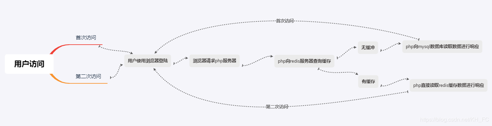
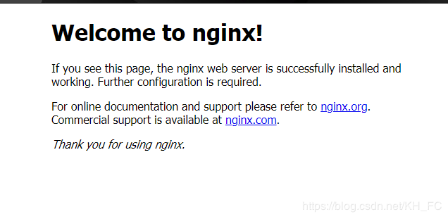
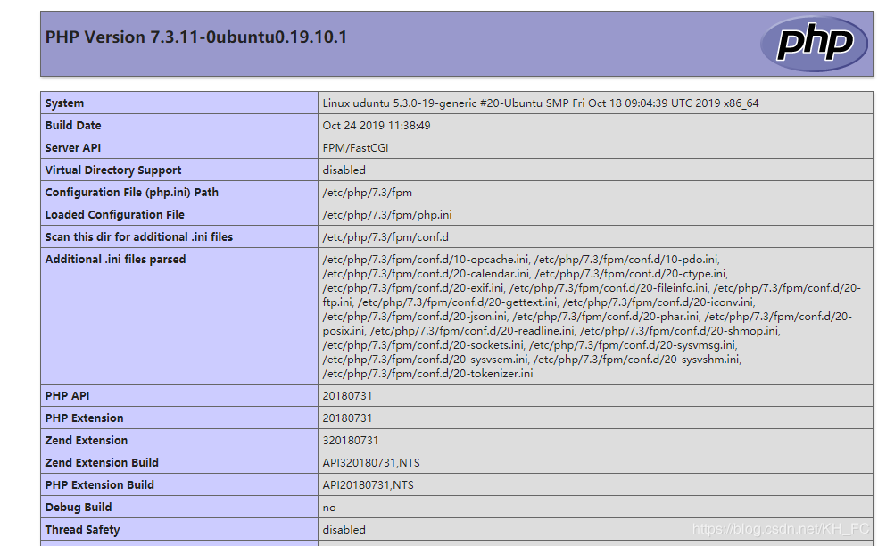

而今天我们又在LNMP架构上面加一个Redis程序，而Redis在整个架构中起到了一个数据缓存的作用。

jia@uduntu:~$ lsb_release -a No LSB modules are available.
Distributor ID: Ubuntu
Description: Ubuntu 19.10
Release: 19.10
Codename: eoan
nginx/1.16.1 (Ubuntu) 7.3.11-0ubuntu0.19.10.1 amd64 1:10.3.17-1 all
5:5.0.5-2build1 all
Nginx描述：Nginx (engine x) 是一个高性能的HTTP和反向代理web服务器，同时也提供了MAP/POP3/SMTP服务。Nginx是一款轻量级的Web 服务器/反向代理服务器及电子邮件（IMAP/POP3）代理服务器，在BSD-like 协议下发行。其特点是占有内存少，并发能力强，事实上nginx的并发能力在同类型的网页服务器中表现较好。
安装Nginx软件包有很多种方法比如：RPM包安装、编译安装等，我在这里软件就全部使用RPM进行安装了
jia@uduntu:~$ sudo apt -y install nginx
Setting up fonts-dejavu-core (2.37-1) ...
Setting up libjpeg-turbo8:amd64 (2.0.3-0ubuntu1) ...
Setting up libjpeg8:amd64 (8c-2ubuntu8) ...
Setting up libnginx-mod-mail (1.16.1-0ubuntu2) ...
Setting up fontconfig-config (2.13.1-2ubuntu2) ...
Setting up libnginx-mod-stream (1.16.1-0ubuntu2) ...
Setting up libtiff5:amd64 (4.0.10+git191003-1) ...
Setting up libfontconfig1:amd64 (2.13.1-2ubuntu2) ...
Setting up libgd3:amd64 (2.2.5-5.2) ...
Setting up libnginx-mod-http-image-filter (1.16.1-0ubuntu2) ...
Setting up nginx-core (1.16.1-0ubuntu2) ...
Setting up nginx (1.16.1-0ubuntu2) ...
Processing triggers for ufw (0.36-1ubuntu3) ...
Processing triggers for systemd (242-7ubuntu3) ...
Processing triggers for man-db (2.8.7-3) ...
Processing triggers for libc-bin (2.30-0ubuntu2) ...
jia@uduntu:~$
出现上面字符即为安装成功
程序启动有两种方法
Ubuntu以及rhel7以上版本使用下面方式：
systemctl start nginx \\启动Nginx
systemctl stop nginx \\停止Nginx
systemctl restart nginx \\重新启动Nginx
rhel7一下版本使用下面方式：
server nginx start \\启动Nginx
server nginx stop \\停止Nginx
server nginx restart \\重新启动Nginx
sh nginx \\启动Nginx
停止nginx可以使用结束进程的方式进行停止
接下来让我们启动nginx并进行访问：
jia@uduntu:~$ systemctl start nginx \\我这里使用的非root用户所以要求输入密码
==== AUTHENTICATING FOR org.freedesktop.systemd1.manage-units ===
Authentication is required to start 'nginx.service'.
Authenticating as: jia
Password:
==== AUTHENTICATION COMPLET
jia@uduntu:~$
启动成功后访问：
访问地址：
http://Server IP Address
看到下面内容证明安装并启动成功：

PHP描述：PHP即“超文本预处理器”，是一种通用开源脚本语言。PHP是在服务器端执行的脚本语言，与C语言类似，是常用的网站编程语言。PHP独特的语法混合了C、Java、Perl以及 PHP 自创的语法。利于学习，使用广泛，主要适用于Web开发领域。
jia@uduntu:~$ sudo apt -y install php php7.3-fpm
[sudo] password for jia: //这里正常输入密码
\\安装最后出现下面显示表示安装成功
Creating config file /etc/php/7.3/mods-available/json.ini with new version
Setting up php7.3-readline (7.3.11-0ubuntu0.19.10.1) ...
Creating config file /etc/php/7.3/mods-available/readline.ini with new version
Setting up php7.3-cli (7.3.11-0ubuntu0.19.10.1) ...
update-alternatives: using /usr/bin/php7.3 to provide /usr/bin/php (php) in auto mode
update-alternatives: using /usr/bin/phar7.3 to provide /usr/bin/phar (phar) in auto mode
update-alternatives: using /usr/bin/phar.phar7.3 to provide /usr/bin/phar.phar (phar.phar) in auto mode
Creating config file /etc/php/7.3/cli/php.ini with new version
Setting up php7.3-fpm (7.3.11-0ubuntu0.19.10.1) ...
Creating config file /etc/php/7.3/fpm/php.ini with new version
Created symlink /etc/systemd/system/multi-user.target.wants/php7.3-fpm.service → /lib/systemd/system/php7.3-fpm.service.
Setting up php7.3 (7.3.11-0ubuntu0.19.10.1) ...
Setting up php (2:7.3+69ubuntu2) ...
Processing triggers for man-db (2.8.7-3) ...
Processing triggers for systemd (242-7ubuntu3) ...
上面已经给大家说过Nginx的启动方法了，php启动方法与Nginx基本一样
jia@uduntu:~$ systemctl start php7.3-fpm
==== AUTHENTICATING FOR org.freedesktop.systemd1.manage-units ===
Authentication is required to start 'php7.3-fpm.service'.
Authenticating as: jia
Password: \\输入密码
==== AUTHENTICATION COMPLETE ===
jia@uduntu:~$
启动成功，可以使用查看进程的方式进行查看
jia@uduntu:~$ ps uax | grep php \\下面进程表示php运行进程
root 10346 0.0 2.5 193732 17384 ? Ss 08:29 0:00 php-fpm: master process (/etc/php/7.3/fpm/php-fpm.conf)
www-data 10357 0.0 0.9 194044 6348 ? S 08:29 0:00 php-fpm: pool www
www-data 10358 0.0 0.9 194044 6348 ? S 08:29 0:00 php-fpm: pool www
jia 10572 0.0 0.1 6296 920 pts/0 S+ 08:33 0:00 grep --color=auto php
jia@uduntu:~$
php启动成功后下面配置Nginx，让Nginx接收到的php请求转交给php服务器进行解析
nginx配置文件：
server {
listen 80 default_server;
listen [::]:80 default_server;
root /var/www/html;
index index.html index.htm index.nginx-debian.html index.php ; \\此处需要在后面添加index.php
server_name _;
location / {
try_files $uri $uri/ =404;
}
location ~ \.php$ { \\取消注释
include snippets/fastcgi-php.conf; \\取消注释
fastcgi_pass unix:/var/run/php/php7.2-fpm.sock; \\这一行和下面一行指的是php侦听方式，查看php是侦听那种方式然后取消注释哪一行
fastcgi_pass 127.0.0.1:9000; \\
}在php-fpm配置文件种查看php的侦听方式：
listen = /run/php/php7.3-fpm.sock \\这种侦听方式适用于本地php
listen = 127.0.0.1：9000 \\这种侦听方式适用于远程PHP
看你的那个php是那种方式侦听的，然后将nginx配置文件中的一行取消注释，然后再重新启动nginx使改动生效
默认网页代码的存放位置：
/var/www/html 测试只需要将index,html该名为index.php，内容更改为你的php代码
我的php代码内容为：
<?php
phpifo();
?>
下面来访问一下，访问地址不变

只要可以解析PHP代码了就表示配置安装成功
部署MariaDBMariaDB描述：MariaDB数据库管理系统是MySQL的一个分支，主要由开源社区在维护，采用GPL授权许可 MariaDB的目的是完全兼容MySQL，包括API和命令行，使之能轻松成为MySQL的代替品。MariaDB基于事务的Maria存储引擎，替换了MySQL的MyISAM存储引擎，它使用了Percona的 XtraDB，InnoDB的变体，分支的开发者希望提供访问即将到来的MySQL 5.4 InnoDB性能。这个版本还包括了 PrimeBase XT (PBXT) 和 FederatedX存储引擎。
jia@uduntu:~$ sudo apt -y install mariadb-server
Setting up mariadb-client-10.3 (1:10.3.17-1) ...
Setting up libdbd-mysql-perl:amd64 (4.050-2build1) ...
Setting up libhtml-parser-perl (3.72-3build2) ...
Setting up mariadb-server-10.3 (1:10.3.17-1) ...
Created symlink /etc/systemd/system/mysql.service → /lib/systemd/system/mariadb.service.
Created symlink /etc/systemd/system/mysqld.service → /lib/systemd/system/mariadb.service.
Created symlink /etc/systemd/system/multi-user.target.wants/mariadb.service → /lib/systemd/system/mariadb.service.
Setting up libhttp-message-perl (6.18-1) ...
Setting up libcgi-pm-perl (4.44-1) ...
Setting up libhtml-template-perl (2.97-1) ...
Setting up mariadb-server (1:10.3.17-1) ...
Setting up libcgi-fast-perl (1:2.15-1) ...
Processing triggers for systemd (242-7ubuntu3) ...
Processing triggers for man-db (2.8.7-3) ...
Processing triggers for libc-bin (2.30-0ubuntu2) ...
jia@uduntu:~$ \\出现上面代码表示安装成功
同Nginx：
jia@uduntu:~$ systemctl start mariadb
==== AUTHENTICATING FOR org.freedesktop.systemd1.manage-units ===
Authentication is required to start 'mariadb.service'.
Authenticating as: jia
Password: \\此处输入密码
==== AUTHENTICATION COMPLETE ===
jia@uduntu:~$
查看是否启动成功：
jia@uduntu:~$ ps uax | grep mysqld
mysql 11669 0.2 11.5 1713056 78488 ? Ssl 09:17 0:00 /usr/sbin/mysqld
jia 12614 0.0 0.1 6296 924 pts/0 S+ 09:23 0:00 grep --color=auto mysqld
jia@uduntu:~$
初始化数据库：
jia@uduntu:~$ sudo mysql_secure_installation
\\下面是初始化过程
NOTE: RUNNING ALL PARTS OF THIS SCRIPT IS RECOMMENDED FOR ALL MariaDB
SERVERS IN PRODUCTION USE! PLEASE READ EACH STEP CAREFULLY!
In order to log into MariaDB to secure it, we'll need the current
password for the root user. If you've just installed MariaDB, and
you haven't set the root password yet, the password will be blank,
so you should just press enter here.
Enter current password for root (enter for none):
OK, successfully used password, moving on...
Setting the root password ensures that nobody can log into the MariaDB
root user without the proper authorisation.
Set root password? [Y/n] y
New password:
Re-enter new password:
Password updated successfully!
Reloading privilege tables..
... Success!
By default, a MariaDB installation has an anonymous user, allowing anyone
to log into MariaDB without having to have a user account created for
them. This is intended only for testing, and to make the installation
go a bit smoother. You should remove them before moving into a
production environment.
Remove anonymous users? [Y/n] y
... Success!
Normally, root should only be allowed to connect from 'localhost'. This
ensures that someone cannot guess at the root password from the network.
Disallow root login remotely? [Y/n] y
... Success!
By default, MariaDB comes with a database named 'test' that anyone can
access. This is also intended only for testing, and should be removed
before moving into a production environment.
Remove test database and access to it? [Y/n] y
- Dropping test database...
... Success!
- Removing privileges on test database...
... Success!
Reloading the privilege tables will ensure that all changes made so far
will take effect immediately.
Reload privilege tables now? [Y/n] y
... Success!
Cleaning up...
All done! If you've completed all of the above steps, your MariaDB
installation should now be secure.
Thanks for using MariaDB!
jia@uduntu:~$
初始化完成后，可直接使用自带的mysql客户端进行连接
jia@uduntu:~$ sudo mysql -u root -p
Enter password:
Welcome to the MariaDB monitor. Commands end with ; or \g.
Your MariaDB connection id is 56
Server version: 10.3.17-MariaDB-1 Ubuntu 19.10
Copyright (c) 2000, 2018, Oracle, MariaDB Corporation Ab and others.
Type 'help;' or '\h' for help. Type '\c' to clear the current input statement.
MariaDB [(none)]> show databases;
+--------------------+
| Database |
+--------------------+
| ifnormation_schema |
| mysql |
| performance_schema |
+--------------------+
3 rows in set (0.000 sec)
MariaDB [(none)]> 安装php连接数据库的中间件：php-mysql
jia@uduntu:~$ sudo apt -y install php-mysql
Preparing to unpack .../php-mysql_2%3a7.3+69ubuntu2_all.deb ...
Unpacking php-mysql (2:7.3+69ubuntu2) ...
Setting up php7.3-mysql (7.3.11-0ubuntu0.19.10.1) ...
Creating config file /etc/php/7.3/mods-available/mysqlnd.ini with new version
Creating config file /etc/php/7.3/mods-available/mysqli.ini with new version
Creating config file /etc/php/7.3/mods-available/pdo_mysql.ini with new version
Setting up php-mysql (2:7.3+69ubuntu2) ...
Processing triggers for php7.3-fpm (7.3.11-0ubuntu0.19.10.1) ...
jia@uduntu:~$ //安装成功
配置php.ini文件，将配置文件中extension=mysqli这一行取消注释就可以了，然后重新启动php-fpm
jia@uduntu:/etc/php/7.3/fpm$ systemctl restart php7.3-fpm
==== AUTHENTICATING FOR org.freedesktop.systemd1.manage-units ===
Authentication is required to restart 'php7.3-fpm.service'.
Authenticating as: jia
Password: \\输入密码
==== AUTHENTICATION COMPLETE ===
jia@uduntu:/etc/php/7.3/fpm$ 测试php是否可使用数据库，最好的方法就是使用php代码写一个连接数据库就可以了
代码如下：
<?php
$host = "localhost"; //mysql主机
$user = "root"; //mysql用户
$passwd = "redhat"; //mysql密码
$conn = new mysqli($host,$user,$passwd);
if (!$conn){
die("连接数据库失败");
}
echo "连接数据库成功";
?>
显示数据库连接成功示安装成功
Redis描述：Redis（全称：Remote Dictionary Server 远程字典服务）是一个开源的使用ANSI C语言编写、支持网络、可基于内存亦可持久化的日志型、Key-Value数据库，并提供多种语言的API。
jia@uduntu:~$ sudo apt -y install redis \\出现下面提示表示安装成功
Setting up lua-cjson:amd64 (2.1.0+dfsg-2.1) ...
Setting up libatomic1:amd64 (9.2.1-9ubuntu2) ...
Setting up lua-bitop:amd64 (1.0.2-5) ...
Setting up liblua5.1-0:amd64 (5.1.5-8.1build3) ...
Setting up libhiredis0.14:amd64 (0.14.0-3) ...
Setting up redis-tools (5:5.0.5-2build1) ...
Setting up redis-server (5:5.0.5-2build1) ...
Created symlink /etc/systemd/system/redis.service → /lib/systemd/system/redis- server.service.
Created symlink /etc/systemd/system/multi-user.target.wants/redis-server.service → /lib/systemd/system/redis-server.service.
Setting up redis (5:5.0.5-2build1) ...
Processing triggers for systemd (242-7ubuntu3) ...
Processing triggers for man-db (2.8.7-3) ...
Processing triggers for libc-bin (2.30-0ubuntu2) ...
jia@uduntu:~$
启动等同于Nginx启动
jia@uduntu:~$ sudo systemctl start redis
启动成功后进行检查
jia@uduntu:~$ sudo netstat -anpl | grep redis
tcp 0 0 127.0.0.1:6379 0.0.0.0:* LISTEN 2094/redis-server 1
tcp6 0 0 ::1:6379 :::* LISTEN 2094/redis-server 1
jia@uduntu:~$ 可以看到redis端口（6379）就证明启动成功
下面让我们使用redis客户端测试一下：
jia@uduntu:~$ sudo redis-cli \\启动redis客户端
127.0.0.1:6379> set test "hellow word" \\设置变量
OK
127.0.0.1:6379> get test \\输出变量
"hellow word"
127.0.0.1:6379> del test \\删除变量
(integer) 1
127.0.0.1:6379> get test
(nil)
127.0.0.1:6379>
上面测试可以看出redis安装成功，并启动成功
安装php连接redis中间件
jia@uduntu:~$ sudo apt -y install php-redis \\输出以下内容表示安装成功
Reading package lists... Done
Building dependency tree
Reading state information... Done
The following additional packages will be installed:
php-igbinary
The following NEW packages will be installed:
php-igbinary php-redis
0 upgraded, 2 newly installed, 0 to remove and 18 not upgraded.
Needto get 239 kB of archives.
After this operation, 1,052 kB of additional disk space will be used.
Get:1 http://cn.archive.ubuntu.com/ubuntu eoan/universe amd64 php-igbinary amd64 3.0.0- 1build1 [101 kB]
Get:2 http://cn.archive.ubuntu.com/ubuntu eoan/universe amd64 php-redis amd64 5.0.2+4.3.0-2build1 [138 kB]
Fetched 239 kB in 13s (19.0 kB/s)
Selecting previously unselected package php-igbinary.
(Reading database ... 70748 files and directories currently installed.)
Preparing to unpack .../php-igbinary_3.0.0-1build1_amd64.deb ...
Unpacking php-igbinary (3.0.0-1build1) ...
Seleting previously unselected package php-redis.
Preparing to unpack .../php-redis_5.0.2+4.3.0-2build1_amd64.deb ...
Unpacking php-redis (5.0.2+4.3.0-2build1) ...
Setting up php-igbinary (3.0.0-1build1) ...
Setting up php-redis (5.0.2+4.3.0-2build1) ...
jia@uduntu:~$
安装成功后，配置php支持redis
找到php.ini这个配置文件，添加下面配置,找到exension=mysql这一条，然后将下面代码粘贴到下一行
extension=redis.so
测试php是否可以使用redis，下面页面简单既可以进行测试
<?php
$redis = new Redis(); \\redis连接参数
$redis->connect('127.0.0.1', 6379); \\括号内第一项是指的redis server ip,第二项是 redis port
echo "Connection to server successfully </br>";
echo "Server is running: " . $redis->ping();
?>
将/var/www/html下面的index.php文件内容替换为上面内容，然后直接访问即可
连接地址：
http://nginx server ip
显示下面内容表示连接成功
Connection to server successfully
Server is running: 1